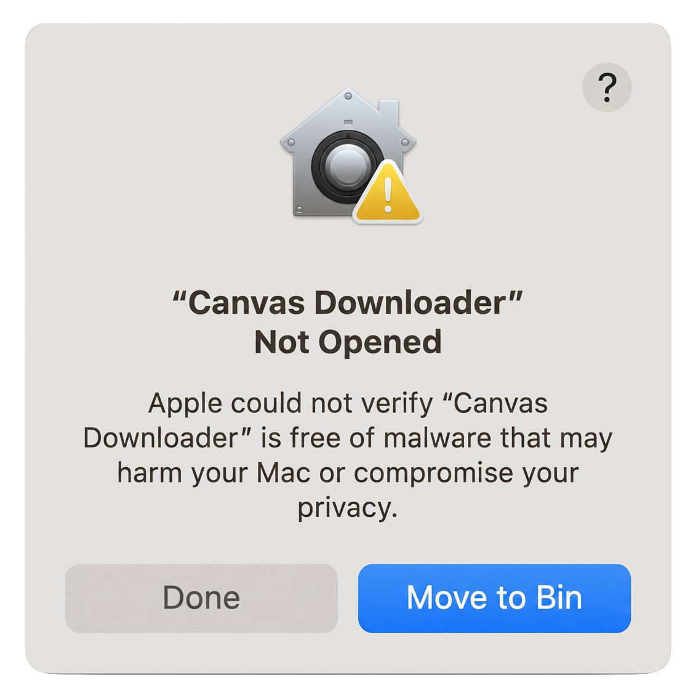
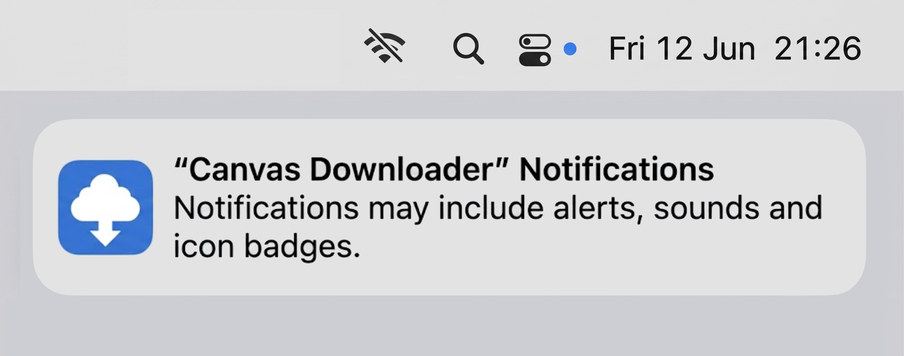
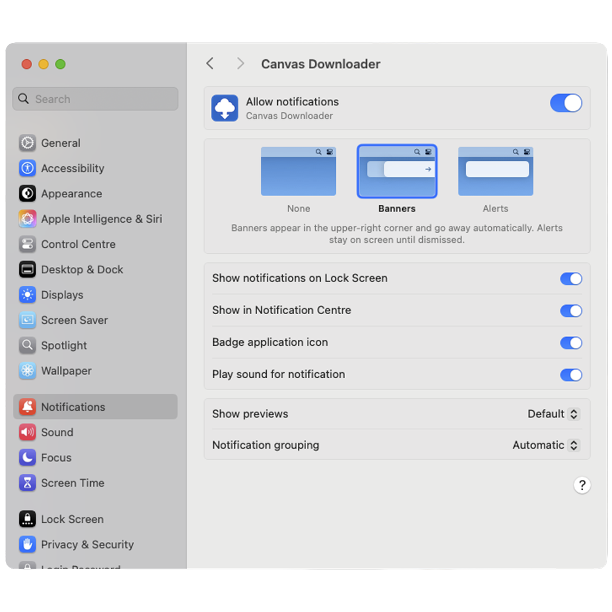
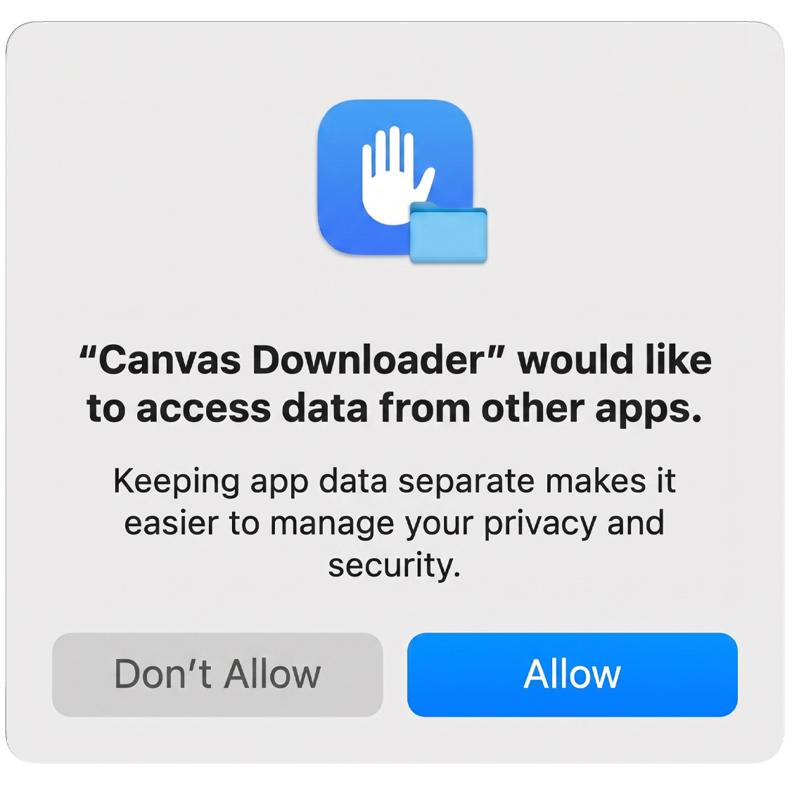
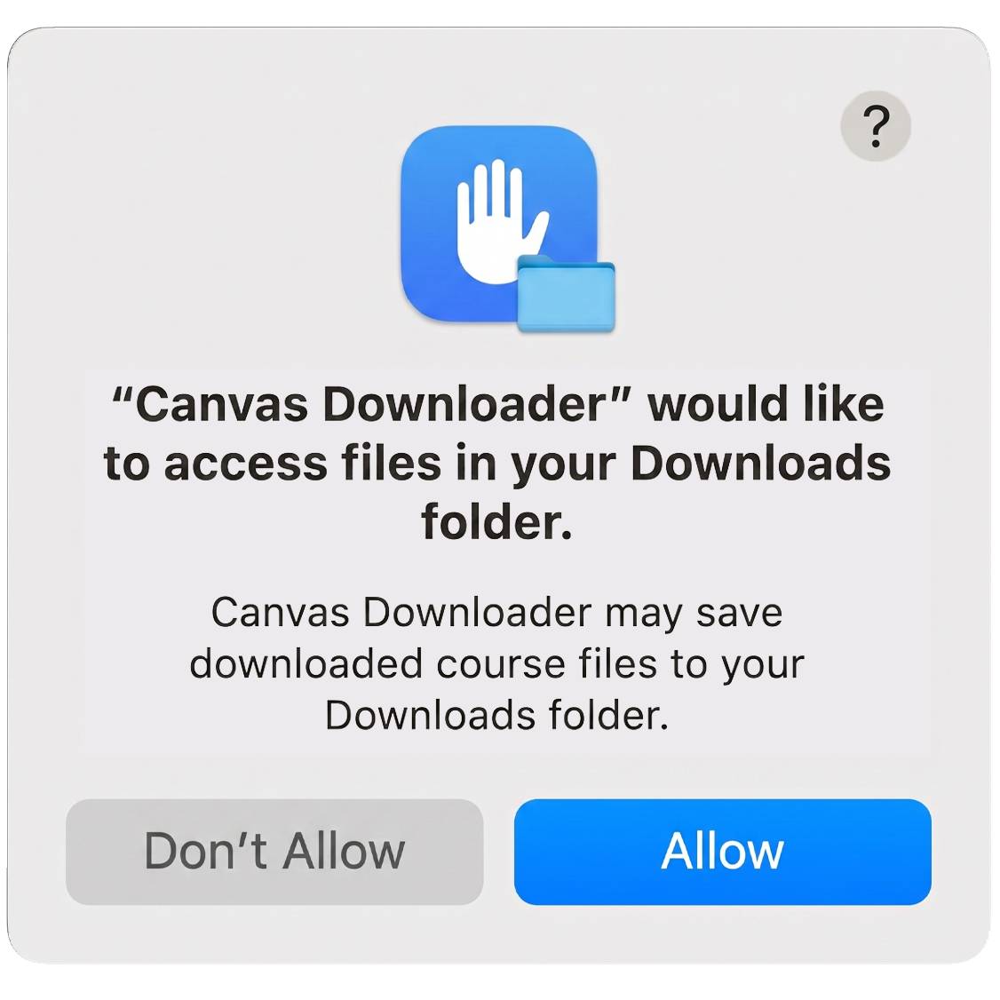
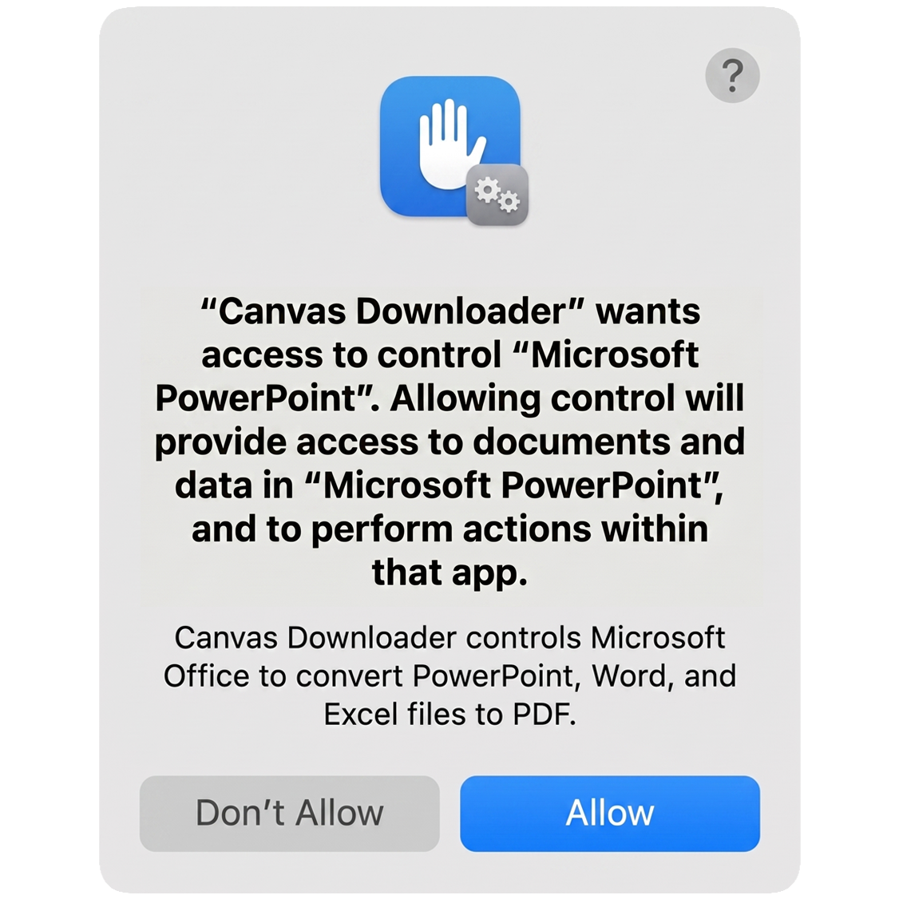
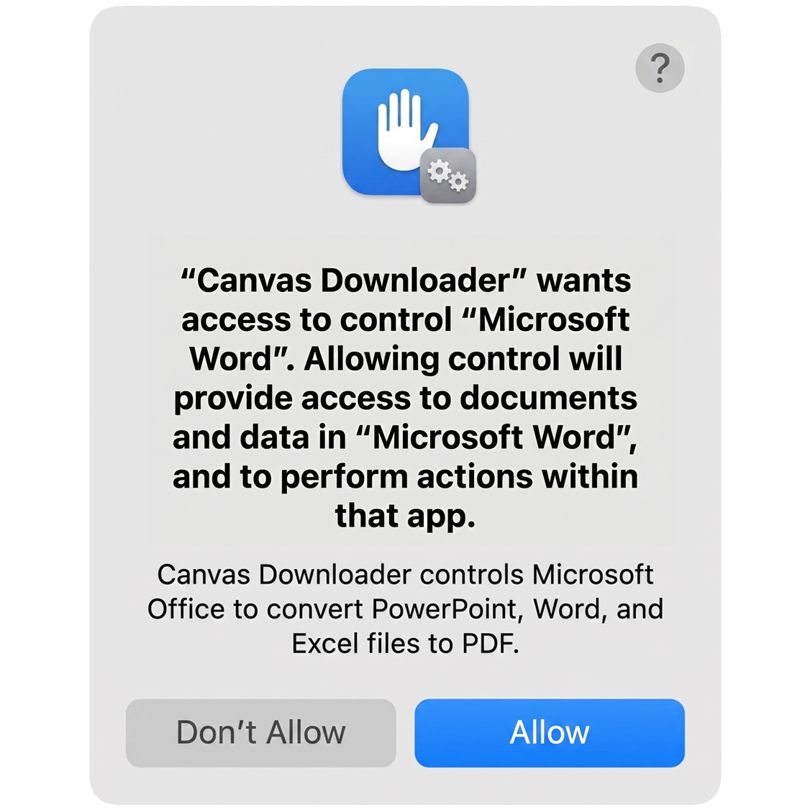
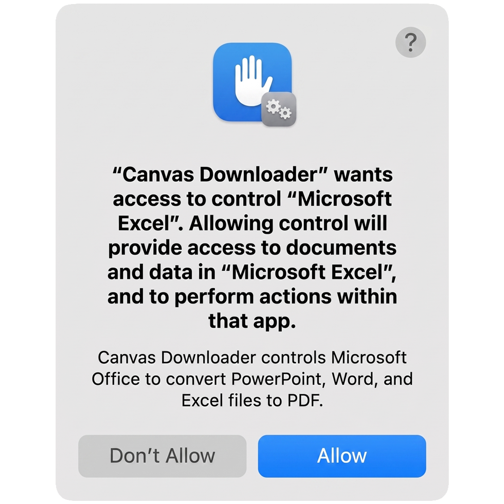

macOS Setup Guide
Canvas Downloader is a free solo project, so macOS asks you to approve it with a few one-time dialogs. The assistant below guides you through every step, tailored to your macOS version. It takes about two minutes.
Prefer reading? See the full step-by-step guide, with screenshots ▶
Install
- Double-click the downloaded
.dmgfile to mount it. - In the window that opens, drag Canvas Downloader onto the Applications folder.
- Eject the DMG - the app now lives in your Applications folder and is ready to open.
Drag the icon onto the Applications folder, just like the clip above.
Open for the first time
The full first-open process, start to finish (shown on macOS Sequoia).
Open your Applications folder and double-click Canvas Downloader. To keep this app completely free for students, I don't pay Apple the $99/year developer fee required to sign the app. Because it is an independent app without this certificate, macOS blocks it on the first attempt - this is completely normal for free, independent apps.
First, you'll see this:

Click Done (not "Move to Trash"). Then open Apple menu → System Settings → Privacy & Security and scroll to the Security section. You'll see "Canvas Downloader was blocked…" - click Open Anyway.
macOS then asks you to confirm your identity:
Canvas Downloader is completely open-source - you can read every line of what it does on GitHub. The password step is macOS's standard safety gate for all unsigned apps from independent developers.
▶ The app says "damaged and can't be opened"?
Open Terminal (Spotlight → type "Terminal" → press Return), paste the line below exactly, and press Return. Nothing visible happens - that's expected. Then go back to Applications and double-click the app normally.
xattr -dr com.apple.quarantine "/Applications/Canvas Downloader.app"
This removes macOS's quarantine flag. It only works if the app is in your Applications folder (step 1).
Allow notifications
When the app opens, macOS shows a notification permission prompt in the top-right corner of your screen. Click it to open the permission dialog:

Once allowed, the toggle in Notification Settings looks like this:

Canvas Downloader sends one "Download Complete" or "Sync Complete" banner when a long run finishes - so you can step away and get notified when it's done. No other notifications are ever sent.
▶ Missed the prompt? Enable notifications manually.
Go to System Settings → Notifications → Canvas Downloader. Turn on Allow Notifications and set the style to Banners or Alerts - the "None" style suppresses all banners even when notifications are technically allowed.
Log in to Canvas
Creating a Canvas Access Token takes about 30 seconds - the clip shows exactly how.
The app opens on a login screen asking for two things: your school's Canvas address and a personal Canvas Access Token.
For the address, use Find your institution beside the field and type
your school's name - the address fills itself in. Not listed? Paste it yourself (e.g. https://school.instructure.com); every Canvas works, listed or not.
For the token, click Get a token beside the token field: it opens your own Canvas token page, where Approved Integrations → + New Access Token generates one in about 30 seconds. Copy it straight away - Canvas shows it only once - and paste it in. Canvas now puts a time limit on tokens, so expect to make a fresh one when yours runs out. What a token can and cannot do is worth two minutes before you create one. The step-by-step walkthrough in the guide has the whole thing, clip included.
First download - one-time permissions
When you start your first download or sync, Canvas Downloader asks macOS for the Office permissions up front - in one batch, so they don't interrupt the run later. Up to five dialogs appear in sequence, depending on which Microsoft Office apps you have installed. A sixth, for System Events, arrives at the end of that first run - see dialog 6.
"Keeping app data separate makes it easier to manage your privacy and security."

PDF conversions use a private scratch folder inside Microsoft Office's own app container - macOS 15 Sequoia flags that as "another app's data." On macOS 14 and earlier this dialog simply never appears.
The one repeat offender: unlike every other dialog on this page, macOS deliberately forgets this consent when the app quits - Apple designed it to last only while the app is open. So expect it once per session: after reopening Canvas Downloader, your first download or sync with conversions asks again, right at the start of the run. One click, then the whole session is covered.
▶ Never want to see it again? Grant Full Disk Access (optional, one-time).
Apps with Full Disk Access are exempt from the App Data check - it is the only permanent silence macOS offers. Recommended if you use the hands-off daily sync.
Go to System Settings → Privacy & Security → Full Disk Access, click +, choose Canvas Downloader from Applications and switch it on, then quit and reopen the app.
"Canvas Downloader may save downloaded course files to your Downloads folder."

macOS asks once per protected folder. If you save files to a custom folder (Documents, Desktop, or elsewhere) you'll see this dialog for that folder instead.
"Allowing control will provide access to documents and data in "Microsoft PowerPoint", and to perform actions within that app."

This is the PDF-conversion permission. Canvas Downloader opens each .pptx file in PowerPoint, exports a PDF locally, and closes it again - nothing is uploaded anywhere.
"Allowing control will provide access to documents and data in "Microsoft Word", and to perform actions within that app."

"Allowing control will provide access to documents and data in "Microsoft Excel", and to perform actions within that app."

Dialogs 3-5 only appear for Office apps you have installed. If you don't have Office, none of them appear and original files are always kept as-is.
"Allowing control will provide access to documents and data in "System Events", and to perform actions within that app."
This one is the tidy-up. When the run finishes, Canvas Downloader closes the Word, Excel and PowerPoint windows it opened for the conversions and clears its temporary files out of your Office Recent lists. System Events is how macOS lets it check which of those apps are still running - it never touches documents you opened yourself.
It appears later than the others, once the download or sync is complete, so don't be surprised by a dialog after the run. If you miss it, nothing is lost - the Office apps just stay open and you can quit them by hand.
That's everything. Every later download and sync runs hands-free - the only possible repeat is the macOS 15+ App Data dialog (1), once per app session, unless you've granted Full Disk Access.
Something went wrong?
Go to System Settings → Privacy & Security → Automation → Canvas Downloader and switch on the entry you denied (Microsoft PowerPoint, Word, Excel, or System Events). Then run the download again.
A permission dialog was probably waiting unanswered while you were away - either the first run's dialog batch, or (macOS 15+) the once-per-session App Data dialog. Answer the dialog, then run a Sync on the same folder and it will pick up any skipped files. To stop the App Data dialog from ever returning, grant Full Disk Access (see Step 5, dialog 1).
That's macOS 15+ behavior, not a bug: Apple expires this consent when the app quits, so it can only ever be granted per session. Click Allow once at the start of the session's first download or sync - or silence it permanently via System Settings → Privacy & Security → Full Disk Access: add Canvas Downloader, switch it on, then quit and reopen the app.
Go to System Settings → Privacy & Security → Files and Folders → Canvas Downloader and enable the folder you want to save into.
Go to System Settings → Notifications → Canvas Downloader. Turn on Allow Notifications and set the alert style to Banners or Alerts - the default "None" blocks all banners.
See Step 2 above - the Terminal xattr -dr command clears macOS's
quarantine flag from the app.